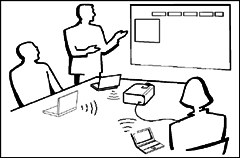
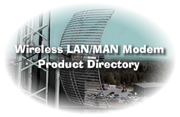

| network |
| home page |
|  | Plug into the Express Connect 4 port hub and you are instantly online. Perfect for conference rooms, mobile workgroups and meeting areas. Your network will always have Internet access, even if the individual systems are misconfigured. .. |
|  |